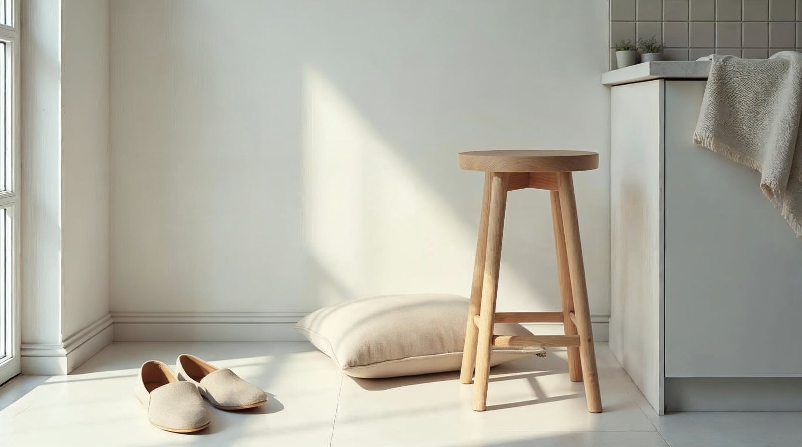
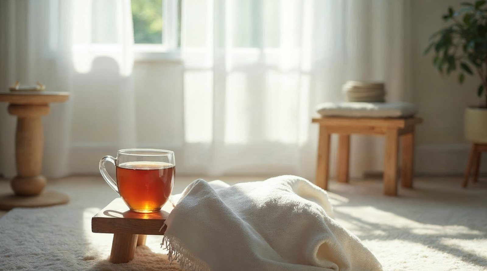
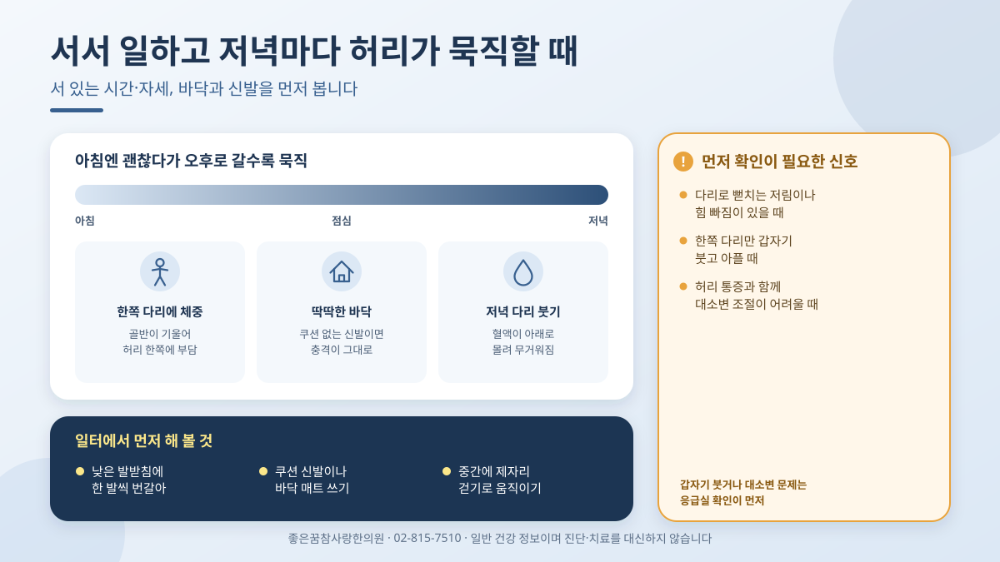

이종호 한의사 감수좋은꿈참사랑한의원 대표원장 (한의사 면허번호 19769)발행 2026-11-23 · 수정 2026-11-26
이 글의 차례
하루 종일 서서 일한 날 저녁마다 허리가 묵직하게 내려앉는다면, 저는 서 있는 시간과 자세, 일하는 바닥과 신발, 쉬는 방법을 먼저 여쭙고 골반과 척추의 균형을 함께 살핍니다. 서서 일하는 것 자체를 바꾸기는 어려워도, 서 있는 방법은 바꿔 볼 수 있는 부분이 생각보다 많습니다.
아침에는 괜찮다가 오후로 갈수록 묵직해지는 흐름도 그 실마리가 됩니다. 다만 한쪽 다리만 갑자기 붓고 아프거나, 허리 통증과 함께 다리에 힘이 빠지거나 대소변 조절이 어려워졌다면 기다리지 말고 가까운 응급실에서 먼저 확인을 받으셔야 합니다.
저녁 8시, 매장 불을 끄고 셔터를 내리고 나서야 허리에 손이 갑니다. 아침 9시에 문을 열 때만 해도 몸은 가벼웠습니다. 점심을 서서 대충 넘기고 손님이 몰리는 오후 서너 시쯤부터 허리 아래가 묵직해지더니, 퇴근 무렵엔 허리띠 언저리에 무거운 돌을 얹어 놓은 것 같습니다. 종아리는 퉁퉁 붓고 양말 자국이 깊게 패어 있습니다.
집에 와 소파에 앉으면 다시 일어나기가 싫습니다. 씻고 누우면 그제야 허리가 조금 풀리는 것 같다가, 다음 날 아침이면 언제 그랬냐는 듯 멀쩡합니다. 그러니 자고 나면 괜찮겠지 하고 넘기게 됩니다. 그렇게 넘긴 날이 벌써 몇 달째입니다.
진료실에서 이런 말씀을 자주 듣습니다. 아침엔 멀쩡한데 저녁만 되면 허리가 내려앉는 것 같다고요. 마트 계산대, 카페, 미용실, 식당 주방, 학원 강단처럼 하루 대부분을 서서 보내는 분들입니다. 그리고 다들 비슷한 말을 덧붙이십니다. 일이니까 어쩔 수 없다고, 앉을 데가 없다고요.
그 말에는 체념과 함께 묵묵히 버텨 온 시간이 담겨 있습니다. 하루 여덟 시간, 열 시간을 서서 일한다는 건 생각보다 훨씬 많은 힘이 드는 일입니다. 저는 그 시간을 먼저 알아드리고 싶습니다. 그동안 정말 애쓰셨습니다.
왜 서 있기만 했는데도 저녁마다 묵직할까요
서 있는 동안 몸을 곧게 세우는 허리와 엉덩이 근육은 한순간도 쉬지 않습니다. 걸을 때는 근육이 번갈아 힘을 주고 빼지만, 한자리에 가만히 서 있으면 같은 근육이 같은 힘으로 계속 버팁니다. 아침에는 견딜 만하던 것이 오후로 갈수록 지치는 까닭입니다. 차라리 걷는 게 낫다는 말씀을 많이 하시는데, 몸의 입장에서 보면 틀린 말이 아닙니다.
오래 서 있다 보면 누구나 한쪽 다리에 체중을 싣게 됩니다. 잠깐은 편하지만 늘 같은 쪽으로 기대면 골반이 한쪽으로 기울고 허리 한쪽에 부담이 몰립니다. 오래된 습관은 본인도 모르는 사이에 자세가 됩니다. 진료실에서 평소처럼 서 보시라고 하면 대부분 늘 기대던 쪽으로 자연스럽게 체중을 옮기십니다.
바닥과 신발도 큰 몫을 합니다. 타일이나 콘크리트처럼 딱딱한 바닥 위에서 쿠션 없는 신발을 신으면 발에서 올라오는 충격이 그대로 무릎과 허리로 전해집니다. 굽이 높은 신발은 허리의 곡선을 더 꺾이게 만들기도 합니다. 반대로 바닥이 아주 얇고 납작한 신발은 발바닥과 종아리를 쉽게 지치게 합니다.
저녁에 다리가 붓는 것도 이유가 있습니다. 종아리 근육은 움직일 때마다 다리의 피를 위로 밀어 올리는 펌프 역할을 하는데, 가만히 서 있으면 이 펌프가 덜 움직여 피와 수분이 다리 아래쪽에 머물기 쉽습니다. 오래 서 있던 날 저녁 종아리가 무겁고 양말 자국이 깊게 남는 까닭입니다. 다리가 무거우면 허리도 덩달아 무겁게 느껴집니다.
일하는 높이가 몸에 맞지 않는 것도 흔한 이유입니다. 계산대나 조리대, 머리를 감기는 세면대가 낮으면 허리를 앞으로 숙인 채 몇 시간을 보내게 됩니다. 서 있는 것과 숙이는 것이 겹치면 허리 아래쪽은 이중으로 일을 하는 셈이지요. 여기에 퇴근 뒤 소파에 구부정하게 기대 앉는 시간까지 더해지면, 허리는 하루 종일 펴질 틈이 없습니다.
그렇다고 근육만 풀면 되는 일도 아닙니다. 통증이 느껴지는 곳과 통증에 영향을 주는 곳이 꼭 같지는 않아서, 근육의 긴장과 함께 관절, 인대, 신경, 자세 습관이 얽혀 있는 경우가 많습니다.
같은 허리 통증이어도 누군가는 하루 종일 서서 일해야 하고, 누군가는 밤마다 잠을 설치고, 누군가는 아픈 몸으로 퇴근 뒤 가족을 돌봐야 합니다. 그래서 저는 아픈 자리만큼 그 통증이 이어지는 하루를 함께 봅니다.
이런 분들을 자주 뵙습니다
계산대나 카운터 앞에서 거의 움직이지 않고 서 있는 분들이 많습니다. 바닥은 딱딱하고 발 디딜 곳은 좁고, 손님이 없는 틈에도 자리를 비우기 어렵습니다. 이런 분께는 발밑에 쿠션 매트를 깔고 낮은 받침을 하나 두어 한 발씩 번갈아 올려 두는 것부터 권합니다. 손님이 뜸한 틈에는 그 자리에서 제자리걸음을 하거나 발뒤꿈치를 들었다 내려 보세요.
미용실이나 주방처럼 몸을 앞으로 숙인 채 서 있는 분들도 자주 뵙습니다. 작업대가 낮으면 허리를 숙이게 되고, 하루가 끝날 무렵엔 허리를 펴는 것 자체가 힘듭니다. 이럴 때는 허리 대신 다리로 높이를 맞추는 방법을 함께 연습합니다. 한쪽 발을 받침에 올리고 무릎을 살짝 굽히면 허리를 덜 숙이고도 손이 작업대에 닿습니다.
하루 종일 서서 강의하는 강사나 교사도 계십니다. 판서를 하느라 팔을 들고 목소리를 내느라 목과 어깨에 힘이 들어가, 허리와 함께 종아리와 목이 같이 지치는 경우가 많습니다.
강의 사이 쉬는 시간에는 잠깐이라도 의자에 앉아 다리를 쉬게 하시고, 강단 위에서도 한자리에 오래 서 있기보다 조금씩 걸으며 말씀하시라고 권합니다. 걷는 동안에는 종아리의 펌프가 움직입니다.
퇴근하고 집에 와서도 서서 하는 일이 이어지는 분들이 있습니다. 저녁 준비, 설거지, 아이 씻기기까지 마치고 나면 밤 열 시가 넘습니다. 허리는 하루에 단 한 번도 쉴 틈이 없었던 셈입니다. 이런 분께는 저녁 집안일 가운데 앉아서 할 수 있는 것을 따로 골라 보자고 말씀드리는데, 채소 다듬기나 빨래 개기는 식탁에 앉아서도 할 수 있으니까요.

일상에서 먼저 해 볼 수 있는 것
출근할 때는 신발부터 살펴 주세요. 굽이 낮고 바닥에 적당한 쿠션이 있는 신발, 발볼이 끼지 않는 신발이 좋습니다. 일하는 곳 바닥이 딱딱하다면 서 있는 자리에 쿠션 매트를 까는 것만으로도 발과 허리가 한결 덜 지칠 수 있습니다. 출근 전 1~2분, 벽을 짚고 종아리를 늘여 두면 하루의 시작이 조금 가볍습니다.
일하는 동안에는 체중을 양발에 고르게 싣는 것을 기억해 두세요. 짝다리를 짚고 있는 자신을 발견하면 그때마다 양발로 돌아오면 됩니다. 발밑에 한 뼘이 안 되는 낮은 받침을 두고 한 발씩 번갈아 올려 두는 것도 좋습니다. 발을 바꿔 가며 서는 동안 골반과 허리의 긴장이 조금씩 풀리고 자세도 자연스럽게 바뀝니다.
- 한 시간에 한 번은 1~2분 제자리에서 걸어 주세요.
- 발뒤꿈치를 천천히 들었다가 내리는 동작을 열 번쯤 하면 종아리의 펌프가 움직입니다.
- 쉬는 시간이 생기면 두 손을 허리에 얹고 허리를 가볍게 뒤로 젖혀 서너 번 펴 주고, 벽을 짚고 한쪽 다리를 뒤로 뻗어 종아리를 20~30초 늘여 줍니다.
- 젖힐 때 아프거나 다리가 저리면 그 동작은 멈추세요.
점심시간에는 5분이라도 의자에 앉아 다리를 쉬게 해 주세요. 끼니를 서서 급하게 넘기는 날이 많다면 그 5분이 허리와 속을 함께 쉬게 하는 시간이 됩니다. 화장실 갈 틈이 없어 물을 일부러 적게 드시는 분도 계신데, 물은 조금씩 나눠서라도 드시는 편이 좋습니다. 몸에 물이 부족하면 근육이 쉽게 지칩니다.
퇴근하면 바로 소파에 몸을 던지고 싶으실 겁니다. 그 마음을 조금만 참고 집에 가는 길을 10분쯤 천천히 걸어 보세요. 굳은 허리와 종아리가 한 번 풀린 다음에 쉬는 편이 몸이 덜 무겁습니다. 버스나 지하철에서 서서 오신다면 손잡이를 잡고 양발에 체중을 나눠 실어 보세요.
집에서는 바닥에 누워 쿠션 두어 개로 다리를 심장보다 조금 높게 올리고 10~15분 쉬어 보세요. 따뜻한 물로 샤워하며 허리와 종아리를 데워 주는 것도 좋습니다. 잘 때 바로 누우신다면 무릎 아래에 베개를 받쳐 허리의 부담을 덜고, 옆으로 누우신다면 무릎 사이에 베개를 끼워 골반이 비틀리지 않게 합니다.
혹시 이런 날이 많지 않으신가요? 오후 서너 시만 되면 허리 아래가 묵직해진다. 서 있을 때 늘 같은 쪽 다리에 기댄다. 퇴근할 무렵 양말 자국이 깊게 남고 종아리가 무겁다. 일하는 동안 앉을 수 있는 시간이 하루 30분도 안 된다. 세 가지 이상 해당한다면 이번 주에는 발받침 하나 두는 것부터 시작해 보세요.
매일 닦는 자개장처럼
저희 어머니 댁에는 오래된 자개장이 있습니다. 어머니가 시집오실 때 외할머니가 해 주신 새까만 장인데, 문을 열면 삐걱거리고 자리도 많이 차지해서 솔직히 제 소원은 그 장을 내다 버리는 것이었습니다. 그런데 어머니는 아침마다 마른 수건으로 그 장의 먼지를 닦으십니다. 부러지면 버리려고 가끔 몰래 열어 보는데, 늘 멀쩡합니다.
저는 몸도 그렇다고 생각합니다. 어르신들께는 무릎 이야기로 자주 드리는 말씀인데, 허리도 다르지 않습니다. 허리 사진을 찍고 디스크가 닳았다는 말을 들은 분도 계실 텐데, 사진에 보이는 모습과 아픈 정도가 꼭 같지는 않습니다. 닳은 것이 있어도 둘레의 근육과 서는 습관을 잘 돌보면 쓸 수 있는 시간이 달라질 수 있습니다.
거창한 운동보다 퇴근 뒤 10분 다리를 올려 두고, 종아리를 한 번 늘여 주고, 따뜻한 물로 데워 주는 일처럼, 매일 닦고 아끼는 작은 손길이 쌓이는 쪽이 더 오래 갑니다.
쉬는 날 하루 몰아서 운동을 하거나 마사지를 받는 것으로 한 주를 버티려는 분도 계십니다. 그런데 저는 일주일에 한 번 세게 하는 것보다 매일 조금씩, 자주 하는 쪽을 권합니다. 힘이 없는 날에는 힘이 없는 만큼만 하셔도 됩니다. 쉬는 날에는 하루 종일 누워 있기보다 가볍게 걷는 시간을 넣어 주세요.
저는 서서 일하는 분께 일을 그만두시라고 말씀드릴 수 없습니다. 그 일이 삶을 꾸려 가는 일이니까요. 제가 할 수 있는 것은 지금의 일과 지금의 몸으로, 그 몸을 가장 잘 쓰실 수 있게 돕는 일입니다. 그래서 하루에 얼마나 서 계셔야 하는지, 무엇이 가장 힘든지, 어제는 어땠는지를 여쭙고 그 안에서 할 수 있는 만큼을 함께 정합니다.
얼마나 지켜보고, 언제 진료를 받을까요
신발과 발받침, 쉬는 방법을 바꿔 본 뒤 2주쯤은 저녁의 묵직함이 몇 시에 시작되는지, 얼마나 무거운지를 짧게 적어 두세요. 매일 비슷한 시각이라면 그 직전에 쉬는 시간을 끼워 넣어 볼 수도 있습니다.
같은 일을 해도 묵직함이 시작되는 시각이 늦어지는지, 퇴근 뒤 풀리는 시간이 짧아지는지가 좋은 비교 기준이 됩니다. 쉬는 날 아침에도 허리가 뻐근하거나 3~4주가 지나도 저녁의 묵직함이 그대로라면 혼자 참지 마시고 상담을 받아 보세요.
이런 증상은 먼저 확인이 필요합니다
- 다리로 뻗치는 저림이나 힘 빠짐이 있는 경우
- 한쪽 다리만 갑자기 붓고 아프거나 붉어지는 경우
이런 신호가 있으면 한의원보다 가까운 병원이나 응급실을 먼저 찾으세요.

좋은꿈참사랑한의원에 처음 오시면
처음 오시면 저는 일하는 환경과 하루 일과부터 여쭙습니다. 하루에 몇 시간을 서 계시는지, 앉을 수 있는 시간은 있는지, 바닥은 어떤지, 어떤 신발을 신는지. 언제부터 묵직했는지, 예전에 허리를 다친 적이 있는지, 전에 받아 본 치료가 있는지도 지난 이야기로 듣습니다. 드시는 약이 있다면 모두 가져오시거나 이름을 적어 와 주세요.
그다음 양손을 올려 봐 달라고 말씀드리고 맥을 짚습니다. 하루 종일 서서 버틴 몸이 얼마나 지쳐 있는지, 몸 전체가 얼마나 긴장해 있는지를 가늠해 보려는 것입니다.
저는 진료할 때마다 아픈 곳과 함께 체온, 소화, 수면, 배설 네 가지를 살피는데, 서서 일하는 분들은 끼니를 서서 넘기고 화장실을 참고 저녁에 쥐가 나서 잠을 설치는 일이 겹치기 쉽습니다. 이 네 가지는 검사 수치로 다 드러나지 않을 때가 많지만, 허리의 묵직함이 왜 그 시각에 찾아오는지 이해하는 데 귀한 단서가 됩니다.
이어서 평소처럼 서 보시게 하고 배꼽 위치와 골반 기울기, 허리를 숙이고 젖히고 돌릴 때의 움직임, 누르면 아픈 곳, 팔다리 힘과 저림을 확인합니다. 필요하다고 판단될 때는 초음파로 근육과 힘줄 상태를 함께 봅니다.
그렇게 살핀 것을 모아 침, 약침, 추나 가운데 지금 상태에 맞는 방법을 고르는데, 많이 받는다고 좋은 것이 아니라 오늘 상태에 맞는 것을 고르는 일이 먼저입니다. 허리가 아픈데 손이나 발에 침을 놓기도 하는데, 아픈 곳을 살피는 침과 몸 전체를 살피는 침을 상황에 맞게 함께 쓰기 때문입니다.
순서는 대개 침을 먼저 놓고, 필요하면 추나를 한 뒤 물리치료로 마무리합니다. 추나는 강도와 자세를 말씀을 들으며 조절하니, 치료 중 온도나 자세, 자극이 불편하시면 언제든 말씀해 주세요. 그 말씀이 다음 치료를 더 잘 맞추는 단서가 됩니다. 진료실을 나서기 전에는 일터에서 바로 해 볼 수 있는 발 바꾸기와 쉬는 동작을 알려 드립니다.
다시 오시면 묵직함이 시작되는 시각이 어땠는지, 발받침은 쓸 만했는지부터 이어서 여쭙고, 그에 맞춰 치료 부위와 방법을 다시 정합니다. 평일은 저녁 8시까지 진료해 퇴근 뒤에 오실 수 있고, 일이 늦게 끝나는 분은 토·일·공휴일(09:30~15:00, 점심시간 없음)에 오셔도 됩니다.
추나요법의 건강보험 적용 여부와 비용, 몇 번쯤 받게 되는지는 사람마다 달라 방문 전 전화로 확인해 주세요.
오실 때 하루 서 있는 시간과 쉬는 시간, 일하는 바닥과 신발 사진, 허리가 묵직해지기 시작하는 시간대, 다리 붓기나 저림이 있었던 날을 메모해 오시면 이야기가 훨씬 빨라집니다.
마치며
오늘도 하루 종일 서 계셨을 겁니다. 손님을 맞고, 음식을 만들고, 누군가의 머리를 다듬고, 칠판 앞에서 목소리를 내셨겠지요. 그렇게 하루를 버틴 허리가 저녁에 묵직한 건 어쩌면 당연한 일입니다. 다만 그 묵직함을 매일 당연하게 넘기지는 않으셨으면 합니다.
내일 출근하시면 딱 하나만 해 보세요. 발밑에 낮은 받침 하나 두기. 다음에 저를 만나시면 그 받침이 쓸 만했는지, 묵직함이 몇 시에 찾아왔는지부터 여쭙겠습니다.
함께 읽으면 좋은 글
- 출퇴근 지하철에서 오래 서 있으면 허리가 뻐근할 때는 어떻게 살피나요?
- 하루 종일 서서 강의하면 허리와 종아리가 뻐근할 때는 어떻게 하나요?
- 미용 일로 점심을 거르거나 서서 급하게 먹을 때 속이 불편하면 어떻게 살피나요?

생활에서 해 볼 것
- 한 시간에 한 번은 1~2분 제자리에서 걸어 주세요.
- 발뒤꿈치를 천천히 들었다가 내리는 동작을 열 번쯤 하면 종아리의 펌프가 움직입니다.
- 쉬는 시간이 생기면 두 손을 허리에 얹고 허리를 가볍게 뒤로 젖혀 서너 번 펴 주고…
먼저 확인이 필요한 신호
- 다리로 뻗치는 저림이나 힘 빠짐이 있는 경우
- 한쪽 다리만 갑자기 붓고 아프거나 붉어지는 경우
자주 묻는 질문
서서 일하는데 앉아서 쉬기 어려우면요?
서 있는 자세를 바꾸는 작은 방법부터 함께 찾습니다. 발받침에 한 발씩 번갈아 올리기나 제자리걸음처럼 그 자리에서 할 수 있는 것부터 시작합니다.
퇴근 후에 진료받을 수 있나요?
평일은 저녁 8시까지 진료합니다.
압박 스타킹을 신어도 되나요?
다리 붓기에 쓰는 분들이 있습니다. 몸 상태에 따라 맞지 않을 수 있어 진료 때 함께 이야기해 보세요.
쿠션 좋은 운동화로 바꾸면 허리도 편해질까요?
발에서 올라오는 충격을 줄이는 데 보탬이 될 수 있지만 신발만으로 정해지지는 않습니다. 서 있는 자세와 쉬는 방법을 함께 바꿔 보고 저녁의 묵직함을 기록해 비교해 보세요.
진료 시간은 어떻게 되나요?
좋은꿈참사랑한의원은 평일 09:30~20:00(점심 13:00~14:00), 토·일·공휴일 09:30~15:00에 진료합니다.
좋은꿈참사랑한의원은 재진 때 지난번 이야기부터 이어서 여쭙니다. 진료시간과 예약은 오시는 길에서 확인하세요.
어디서 상담받을 수 있나요?
좋은꿈참사랑한의원은 서울 동작구 만양로2길 2 신성빌딩 3층·5층(서울 동작구 상도동, 7호선 상도역 3번 출구 근처)에 있습니다. 한의사 3명(이종호 대표원장, 조영기 수석진료원장, 정원영 진료원장)이 진료합니다. 진료시간은 평일 09:30~20:00(점심 13:00~14:00), 토·일·공휴일 09:30~15:00이며, 방문 전 전화로 확인을 권합니다. 예약은 네이버 예약, 카카오톡 상담, 전화 02-815-7510로 받습니다.
이 글은 일반적인 건강 정보이며 개인의 진단이나 치료를 대신하지 않습니다. 증상이 있거나 복용 중인 약이 있다면 진료를 통해 확인하세요. 치료 효과는 개인마다 다를 수 있습니다.
작성 기준: 일반적으로 알려져 있는 건강 정보를 참고해 정리했습니다(대표원장 감수). 증상 기록은 1~2주 동안 하루 1회, 비슷한 시간에 적어 오시면 지난 상태와 비교하기 쉽습니다.